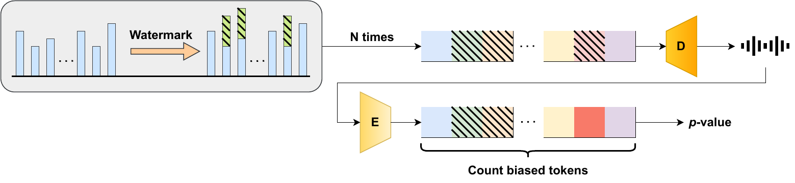
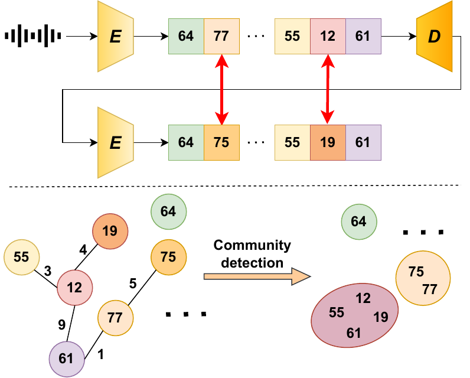

As policy catches up with the capabilities of generative AI, watermarking is central to content provenance efforts. Inference-time watermarks for autoregressive models are unfit for continuous modalities due to discretization inconsistencies. Existing methods overcome this by finetuning the modality tokenizers, nullifying the watermark's training-free advantage. In this work, motivated by the vocabulary redundancy of discretization, we propose an elegant solution for powerful and robust watermarking of synthetic audio. We theoretically analyze the impact of token errors on watermark detection, and effectively mitigate them using a reduced vocabulary obtained via community detection. Thorough experiments showcase that our gradient-free method can boost detectability by several orders of magnitude, while also achieving built-in robustness to audio modifications. Broadly, we discover a new state-of-the-art for token-level watermarks in multimedia, which simply arises from the nature of discrete representation learning.


Template placeholders for qualitative examples. Replace each source path with your generated samples.
| No watermark | Baseline watermark | NoGrad watermark (ours) |
|---|---|---|
@inproceedings{milis2026hidden,
title={Hidden in Plain Tokens: Simply Robust, Gradient-Free Watermark for Synthetic Audio},
author={Milis, Georgios and Qin, Yubin and Wu, Yihan and Huang, Heng},
booktitle={Proceedings of the 43rd International Conference on Machine Learning (ICML)},
year={2026}
}